Troop.............A..B..C..D.... Focal.Lemur Species
Length:694 Length:694 Length:694
Class :character Class :character Class :character
Mode :character Mode :character Mode :character
Sex Month Day Year
Length:694 Min. :6.000 Min. : 1.00 Min. :2022
Class :character 1st Qu.:6.000 1st Qu.: 8.00 1st Qu.:2022
Mode :character Median :6.000 Median :22.00 Median :2022
Mean :6.411 Mean :18.29 Mean :2022
3rd Qu.:7.000 3rd Qu.:28.00 3rd Qu.:2022
Max. :7.000 Max. :30.00 Max. :2022
Time..H.M.S. Category
Length:694 Length:694
Class :character Class :character
Mode :character Mode :character
Focal.sample.note......................................................................................................................................................please.include.as.much.detail.as.possible...If.a.note.is.about.a.grooming.bout..for.example..include.stop.time.in.the.same.cell.
Length:694
Class :character
Mode :character
Now I want to create a separate data frame that only contains behaviors from my ethogram:
# do not run # lefty_justEthogram <-# L %>% select(Category) %>%# filter(str_detect(Category, "BP|QP|L|AG|SG|F|E|CL|HC|R|G|"))
Why didn’t it work
This did not work: Would it be possible to split the “Category” column into 2 columns? 1 that says “Task” and another that says “Limb”?
“Limb” would have LH/RH/LF/RH and “Task” would have the other stuff
I think if I duplicate the column and rename it and then eliminate the limbs from “Task” and keep only the limbs in “Limbs” it might work.
Then I can rename the tasks to “Eating/Grooming/Locomotion/etc.
Duplicating “Category” and calling the new one “Limb”
# do not run: L_HFdata$Limb <- L_PreClean$Category# do not run: L_PreClean2 <- L_PreClean %>% relocate (Limb, .before = Note)
This did not work
Replacing limb with nothing
# do not run: lefty_split <- L_PreClean2$Category <- str_replace(L_PreClean$Limb, "BP|QP|L|AG|SG|F|E|CL|HC|R|G|", "")# do not run: lefty_fullsplit <- L_PreClean2$Limb <- str_replace(L_PreClean$Category, "LF|LH|RF|RH|", "")
Categories kept limbs because they include an R (like rest) or L (like locomotion) I think limb section stayed the same? I think it kept all the columns that contained the limbs, which was all of them ofc. I might be running the wrong code.
Okay I’m going to use find and replace in Excel to fix it because R doesn’t know how to do anything apparently and I literally want to cry rn
Wait wtf why does it say 30,000+ rows columns
okay I’ve spent 4 hours trying to get it to work and tbh this is a waste of time so I’m just going to export the behavior data as a CSV and finish cleaning it in Google Sheets
Writing as CSV bc my attempts at making limb column completely failed after working on it for 2 days
# write_csv(L_PreClean,"Lefty_Lemurs.csv")
Here’s what I did in Google Sheets with the CSV file (I really wanted to do it in R but I could not figure it out and wasted hours and hours)
Deleted rows that didn’t contain behaviors from my ethogram
Copied “Category” into 2 columns
In old Category column, deleted limb data
In new “Limb” data, kept only limb data (not behavior)
Deleted rows that had question marks in data
Deleted data where category was “Other”
Deleted data that had rows with both hands
Merged “F” and “E” into one category “E”
Looked through notes to change category when it was just “G”. Most got changed to L, some got changed to R, a few got deleted
Added new column for H/F to say whether limb was hand or foot
Added new column for side to say whether limb was left or right
New categories - E (eating/foraging) - R (resting) (lemur is still) - L (locomotion) (active motion like leaping, climbing, or jumping) - CL (cross legs) - HC (hand clasp) - BP (bipedal walking) - QP (quadrupedal walking) - LA (land) - SG (self grooming) - AG (allo-grooming)
Upload clean data (it was a nightmare of cleaning this data in R and Excel and took many terrible hours, of which I do not wish to relive)
L <-read.csv("~/Documents/GitHub/Lefty_Lemurs/LeftyLemurs_Clean.csv")
Analysis
Hex codes for colors (to use in graphs) Red: #C84E00 Orange: #E89923 Yellow: #FFD960 Light Green: #A1B70D Turquoise: #339898 Teal: #1D6363 Medium Blue: #005587 Light Blue: #0577B1 Purple: #993399
head(L)
Troop Focal Species Age Sex Month Day Year Time Category Limb H.F Side
1 P Carolina Emon 12 F 6 30 2022 8:25:26 E RH H R
2 P Carolina Emon 12 F 6 30 2022 8:28:29 E RH H R
3 P Carolina Emon 12 F 6 30 2022 8:23:54 E LH H L
4 P Carolina Emon 12 F 6 30 2022 8:25:47 E LH H L
5 P Carolina Emon 12 F 6 30 2022 8:27:13 E LH H L
6 P Carolina Emon 12 F 6 30 2022 8:43:36 E LH H L
Note
1 Grasp silverberry with right hand and eat
2 Grasp and eat silverberry with right hand on top
3 Grab silverberry with left hand and eat
4 Grasp silverberry with left hand and eat
5 Grasp silverberry plant with left hand and eat
6 Forage and eat evergreen leaves with left hand
Let’s look at how many total instances of each limb use there was
table(L$Limb)
LF LH RF RH
32 225 47 318
Omg
Left Hand: 225 Right Hand: 318 Left Foot: 32 Right Foot: 47
It looks like lemurs used their right hands a lot more than they used their left hands…
ggplot (L, aes(x=reorder (Limb, Limb, table ))) +geom_bar(color ="black", fill ="#012169") +theme_classic() +xlab("Limb") +ylab("Total Times Using Each Limb") +ggtitle("Total Limb Use Across Lemurs") +coord_flip()
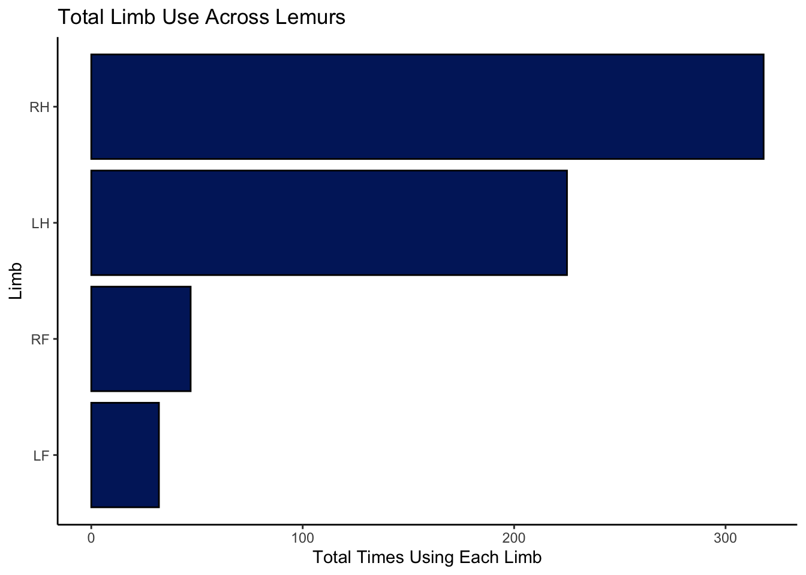
Yep, there definitely appears to be a hand/foot preference
ggplot (L, aes(x=reorder (Limb, Limb, table ))) +geom_bar(color ="black", fill ="#C84E00") +theme_classic() +xlab("Limb") +ylab("Total Times Using Each Limb") +ggtitle("Total Limb Use Across Lemur Species") +coord_flip() +facet_wrap (~ Species, scales ="free")
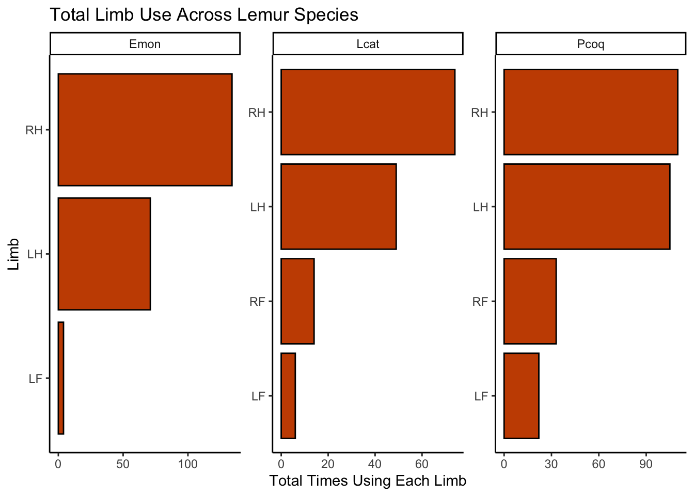
ggplot (L, aes(x= Side)) +geom_bar(color ="black", fill ="#C84E00") +theme_classic() +xlab("Left or Right Side") +ylab("# of Times Using Each Limb") +ggtitle("Limb Use Between Lemur Species") +facet_wrap (~ Species, scales ="free")
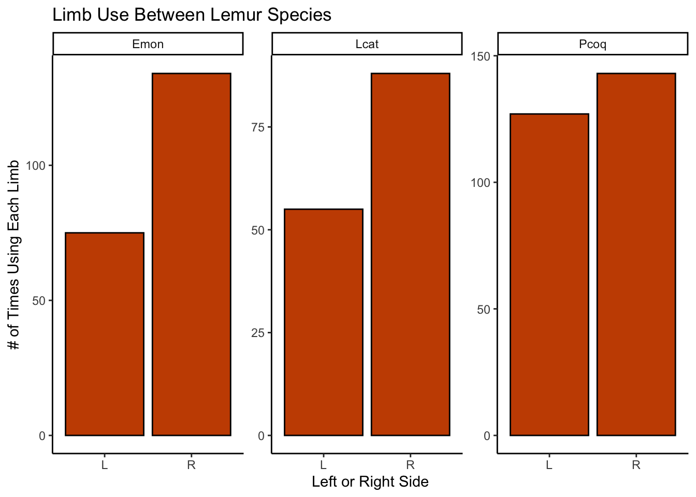
ggplot (L, aes(x=reorder (Side, Side, table ))) +geom_bar(color ="black", fill ="#C84E00") +theme_classic() +xlab("Left or Right") +ylab("Total Times Using Each Limb") +ggtitle("Limb Use Between Lemur Species") +coord_flip() +facet_wrap (~ Species, scales ="free")
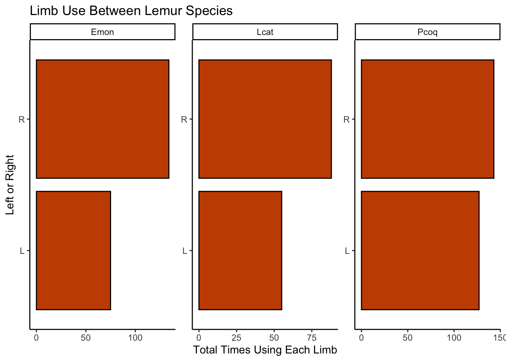
Same thing but on the same scale (I got more data from sifakas as u can see)
ggplot (L, aes(x= Side)) +geom_bar(color ="black", fill ="#C84E00") +theme_classic() +xlab("Left or Right Side") +ylab("# of Times Using Each Limb") +ggtitle("Limb Use Between Lemur Species") +facet_wrap (~ Species,)
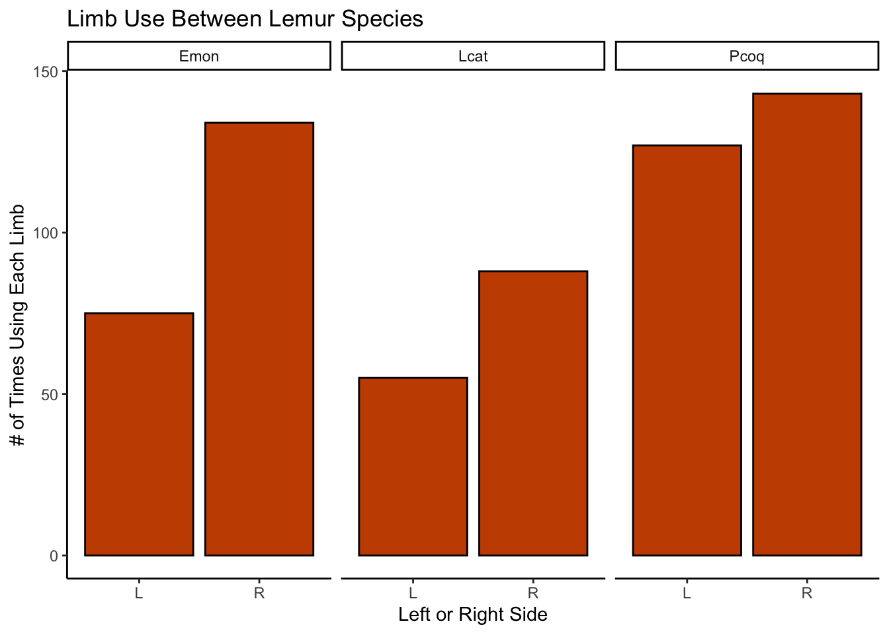
👀 Sifakas have higher left hand use than the other 2 species. Sifakas overall seem more ambidextrous. However, this could be due to them foraging more (maybe all lemurs forage more with their left hands or something idk). Therefore I should separate it out by eating behaviors.
What about by sex
ggplot (L, aes(x =reorder (Limb, Limb, table ))) +geom_bar(color ="black", fill ="#1D6363") +theme_classic() +xlab("Limb") +ylab("Total Times Using Each Limb") +ggtitle("Total Limb Use Between Sexes: Lemurs Are Not Lefties") +coord_flip() +facet_wrap (~ Sex, scales ="free")
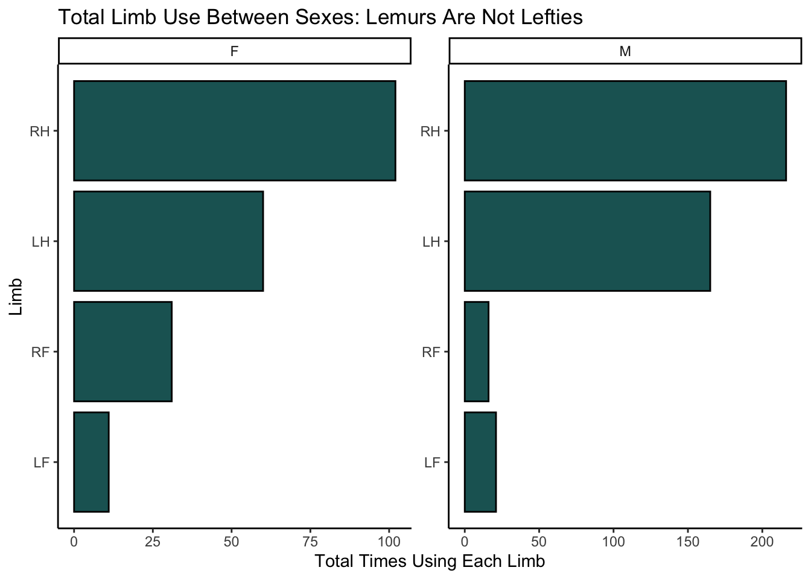
This is the same thing but just divided by left and right side (left hand and left foot, etc. are in the same category)
ggplot (L, aes(x=reorder (Side, Side, table ))) +geom_bar(color ="black", fill ="#1D6363") +theme_classic() +xlab("Left or Right") +ylab("Total Times Using Each Limb") +ggtitle("Total Limb Use Between Sexes: Lemurs Are Not Lefties") +coord_flip() +facet_wrap (~ Sex, scales ="free")
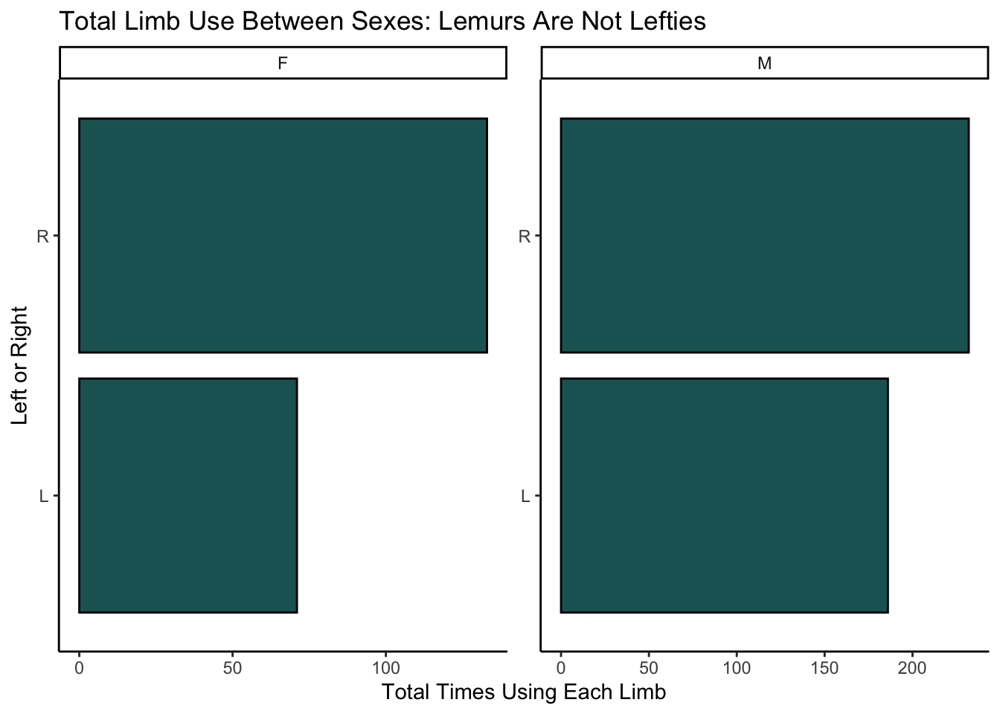
Definitely more right hand than left HAND use for both males and females. Not sure about foot use, but I didn’t get much foot use data to begin with. Is there a way to exclude foot use?
Males might me a little less lateralized than females? Left hand use is also (slightly) higher in males like I thought it would be!
ggplot (L, aes(x=reorder (Category, Category, table ))) +geom_bar(color ="black", fill ="#0577B1") +theme_classic() +xlab("Type of Behavior") +ylab("Total Times Using Each Limb") +ggtitle("Behavior Across Sexes") +coord_flip() +facet_wrap (~ Sex,scales ="free")
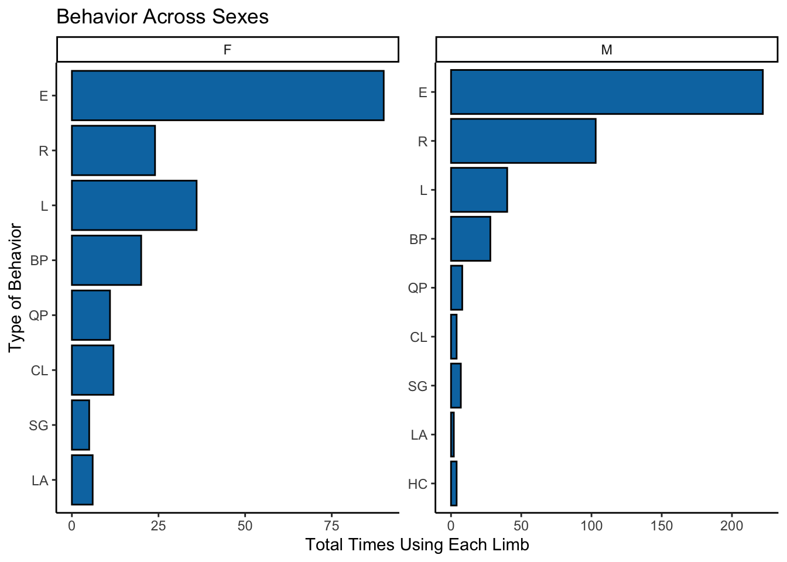
Everyone eats a lot
Some calculations
summary(L)
Troop Focal Species Age
Length:622 Length:622 Length:622 Min. : 5
Class :character Class :character Class :character 1st Qu.:10
Mode :character Mode :character Mode :character Median :12
Mean :12
3rd Qu.:14
Max. :29
Sex Month Day Year
Length:622 Min. :6.000 Min. : 1.00 Min. :2022
Class :character 1st Qu.:6.000 1st Qu.: 8.00 1st Qu.:2022
Mode :character Median :6.000 Median :22.00 Median :2022
Mean :6.436 Mean :18.04 Mean :2022
3rd Qu.:7.000 3rd Qu.:28.00 3rd Qu.:2022
Max. :7.000 Max. :30.00 Max. :2022
Time Category Limb H.F
Length:622 Length:622 Length:622 Length:622
Class :character Class :character Class :character Class :character
Mode :character Mode :character Mode :character Mode :character
Side Note
Length:622 Length:622
Class :character Class :character
Mode :character Mode :character
library(psych)
Attaching package: 'psych'
The following objects are masked from 'package:ggplot2':
%+%, alpha
# take out feet use datal_hands <- L %>%select(H.F) %>%filter(str_detect(H.F, "H"))# add the other stuff backl_hands <-inner_join(l_hands, L, by ="H.F")l_hands <-unique(l_hands)# actually I also don't want to look at all the categories bc some were added just for fun and are probably not importantl_handstuff <- l_hands %>%select(Category) %>%filter(str_detect(Category, "E|L|R|SG"))# WHY WON'T IT TAKE OUT LA# add the other stuff back why did it even go awayl_handstuff <-inner_join(l_handstuff, l_hands, by ="Category")# I can remove the H.F row because all of it is hand l_handstuff <- l_handstuff %>%select(-H.F)# removing Limb row bc side says the same thingl_handstuff <- l_handstuff %>%select(-Limb)# removing mystery duplicatesl_handstuff <-unique(l_handstuff)l_noLA <-l_handstuff %>%filter(Category =="E"| Category =="L"| Category =="R"| Category =="SG"| Category !="LA" )#wow I forgot you can do that
Compare hand use by species
ggplot (l_noLA, aes(x= Side)) +geom_bar(color ="black", fill ="#C84E00") +theme_classic() +xlab("Left or Right Side") +ylab("# of Times Using Each Limb") +ggtitle("Hand Use Between Lemur Species") +facet_wrap (~ Species, scales ="free")
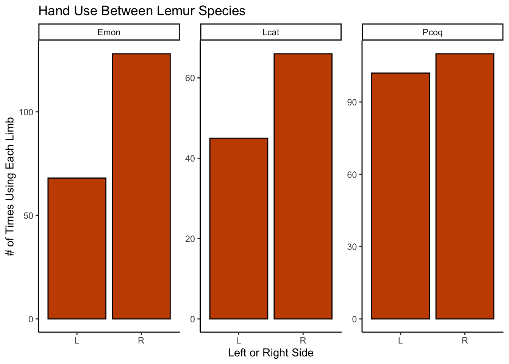
ggplot (l_noLA, aes(x= Side)) +geom_bar(color ="black", fill ="#C84E00") +theme_classic() +xlab("Left or Right Side") +ylab("Type of Behavior") +ggtitle("Hand Use Between Behaviors") +facet_wrap (~ Category, scales ="free")
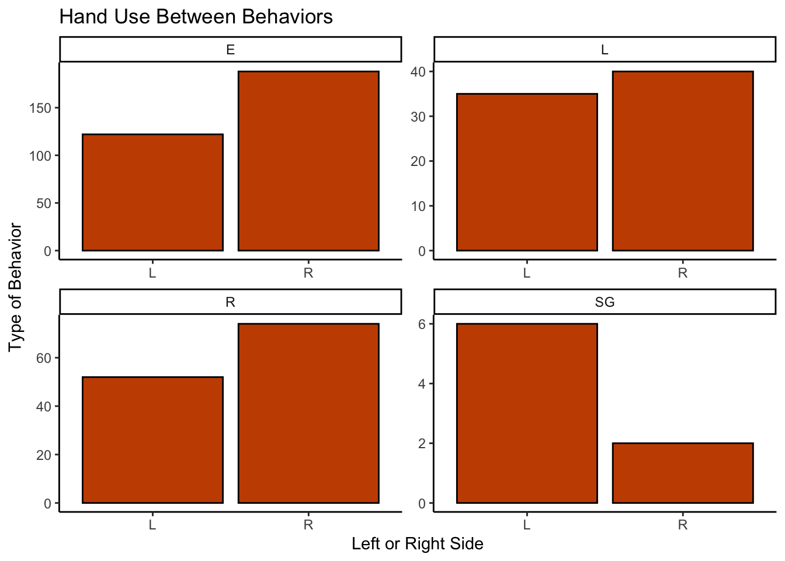
So it looks like lemurs mostly use their right hand for everything except for grooming! Interesting
Now I’m going to filter out the grooming data so it’s all grasping
ggplot (l_grasps, aes(x= Side)) +geom_bar(color ="black", fill ="#C84E00") +theme_classic() +xlab("Left or Right Side") +ylab("# of Times Using Each Limb") +ggtitle("Hand Use for Grasping Between Lemur Species") +facet_wrap (~ Species, scales ="free")
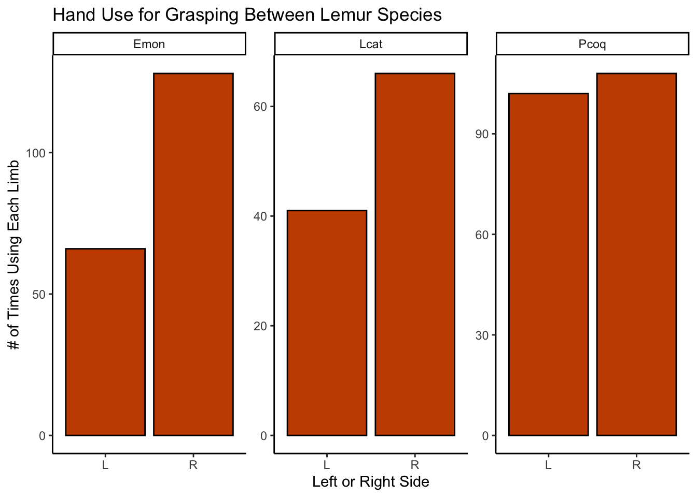
What about by sex?
ggplot (l_grasps, aes(x= Side)) +geom_bar(color ="black", fill ="#C84E00") +theme_classic() +xlab("Left or Right Side") +ylab("# of Times Using Each Limb") +ggtitle("Hand Use for Grasping Between Sexes") +facet_wrap (~ Sex, scales ="free")
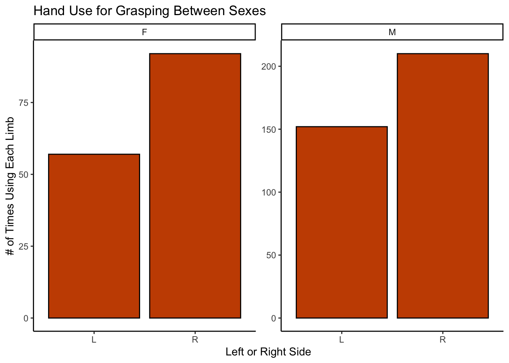
It doesn’t look like there’s really a difference
What about just food grasps?
l_foodGrasps <-l_grasps %>%filter(Category =="E")
Compare grasping hand by species
ggplot (l_foodGrasps, aes(x= Side)) +geom_bar(color ="black", fill ="#C84E00") +theme_classic() +xlab("Left or Right Side") +ylab("# of Times Using Each Limb") +ggtitle("Hand Use for Food Grasping Between Lemur Species") +facet_wrap (~ Species, scales ="free")
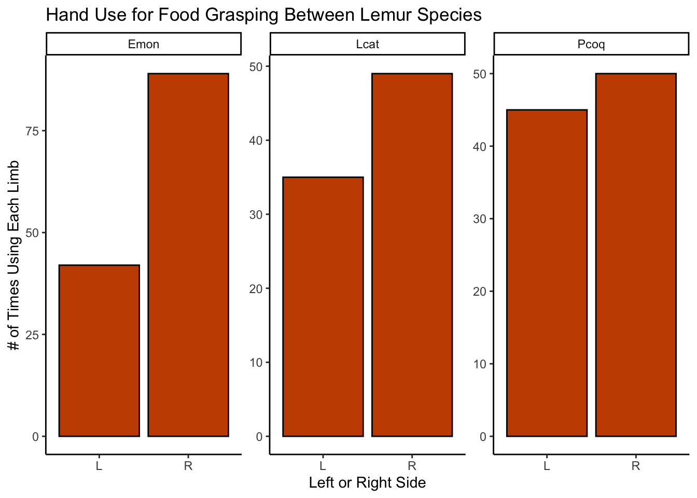
It really looks like sifakas are more ambidextrous when it comes to food grasping!
What about by individual?
ggplot (l_foodGrasps, aes(x= Side)) +geom_bar(color ="black", fill ="#C84E00") +theme_classic() +xlab("Left or Right Side") +ylab("# of Times Using Each Limb") +ggtitle("Hand Use for Food Grasping Between Individuals") +facet_wrap (~ Focal, scales ="free")
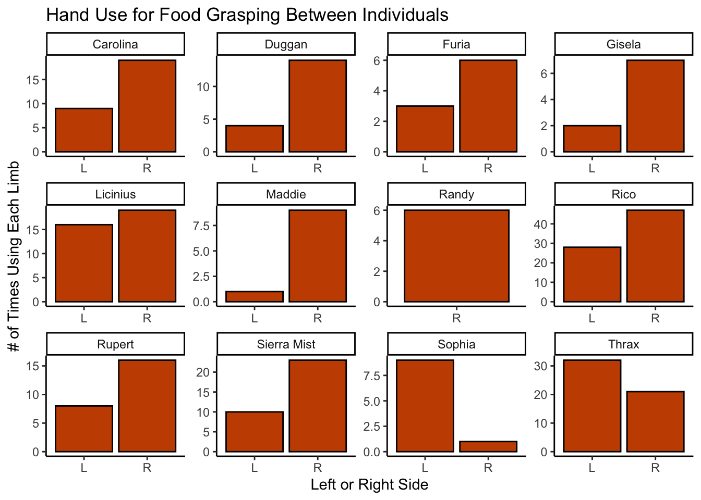
It kind of looks like Sophia and Thrax are lefties!!! And Licinius is close… The other lemurs look like righties!
Look at them all on the same scale
ggplot (l_foodGrasps, aes(x= Side)) +geom_bar(color ="black", fill ="#C84E00") +theme_classic() +xlab("Left or Right Side") +ylab("# of Times Using Each Limb") +ggtitle("Hand Use for Food Grasping Between Individuals") +facet_wrap (~ Focal)
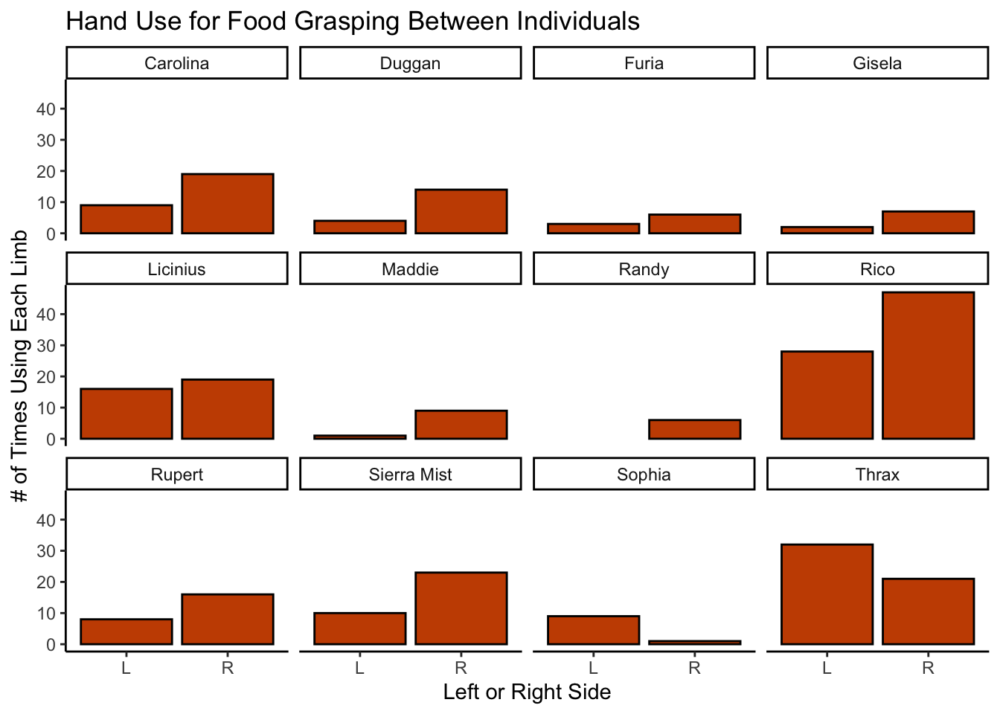
Okay there isn’t much data for Sophia so it could just be “noise” for her… But Thrax has a lot of data
But is all of this actually statistically significant Don’t know
ggplot (l_noLA, aes(x= Category)) +geom_bar(color ="black", fill ="#C84E00") +theme_classic() +xlab("Activity") +ylab("Occurrences") +ggtitle("Hand Use for Activities by Species") +facet_wrap (~ Species)
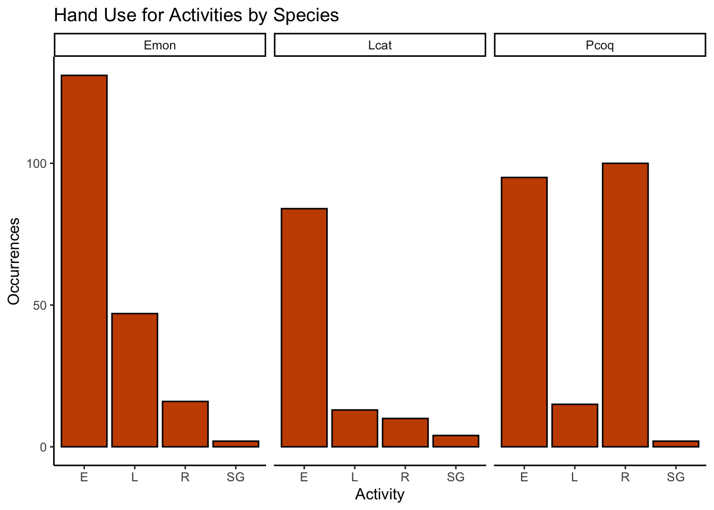
This just does occurrences. How can I get the Y-axis to be % of L compared to R?
Idk
ggplot (l_foodGrasps, aes(x= Side)) +geom_bar(color ="black", fill ="#C84E00") +theme_classic() +xlab("Activity") +ylab("Occurrences") +ggtitle("Hand Used for Food Grasping Between Species") +facet_wrap (~ Species)
ggplot (l_foodGrasps, aes(x= Side)) +geom_bar(color ="black", fill ="#C84E00") +theme_classic() +xlab("Left or Right Side") +ylab("# of Times Using Each Limb") +ggtitle("Hand Use for Grasping Between Individuals") +facet_wrap (~ Focal, scales ="free" )
ggplot (l_foodGrasps, aes(x= Side)) +geom_bar(color ="black", fill ="#C84E00") +theme_classic() +xlab("Side") +ylab("Occurrences") +ggtitle("Hand Used for Food Grasping Between Species") +facet_wrap (~ Species)
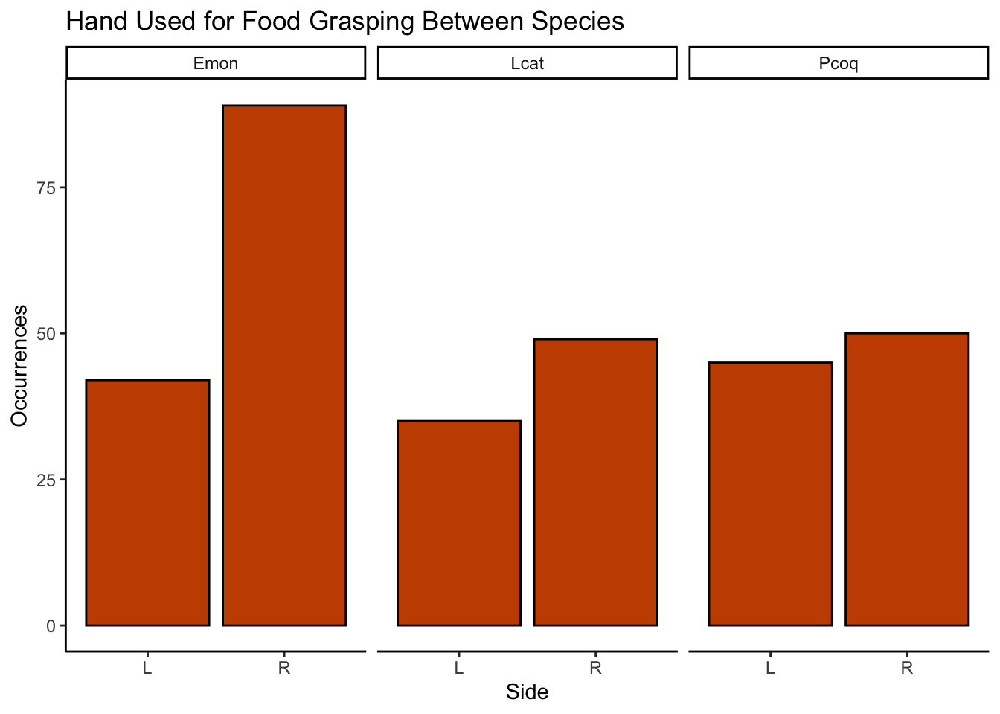
ggplot (L, aes(x= Focal)) +geom_bar(color ="black", fill ="#C84E00") +theme_classic() +xlab("Focal") +ylab("Occurrences") +ggtitle("# of Times Using Each Limb") +facet_wrap (~ Side)
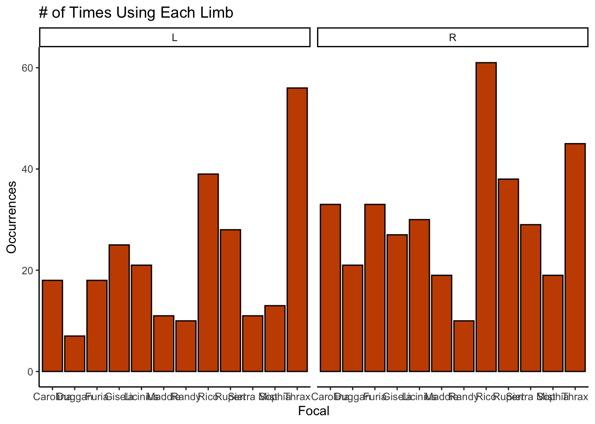
ggplot (l_foodGrasps, aes(x= Side)) +geom_bar(color ="black", fill ="#C84E00") +theme_classic() +xlab("Side") +ylab("Occurrences") +ggtitle("Hand Used for Food Grasping Between Sex") +facet_wrap (~ Sex, scales ="free")
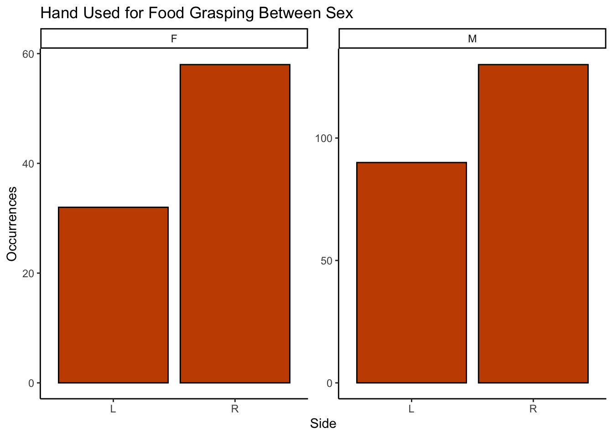
Trying some statistical tests
L %>%group_by(Side) %>%summarise (n =n()) %>%mutate(proportion = n /sum(n))
# A tibble: 2 × 3
Side n proportion
<chr> <int> <dbl>
1 L 257 0.413
2 R 365 0.587
l_handstuff %>%group_by(Side) %>%summarise (n =n()) %>%mutate(proportion = n /sum(n))
# A tibble: 2 × 3
Side n proportion
<chr> <int> <dbl>
1 L 218 0.417
2 R 305 0.583
binom.test(218, 305, p = .75, alternative ="two.sided")
Exact binomial test
data: 218 and 305
number of successes = 218, number of trials = 305, p-value = 0.1648
alternative hypothesis: true probability of success is not equal to 0.75
95 percent confidence interval:
0.6605189 0.7647621
sample estimates:
probability of success
0.7147541
Trying to do chi-squared test and contigency coefficients (did not work)
It says it can’t because it doesnt understand “Freq”
ggplot (l_grasps, aes(x= Side)) +geom_bar(color ="black", fill ="#C84E00") +theme_classic() +xlab("Left or Right Side") +ylab("# of Times Using Each Limb") +ggtitle("Hand Use for Grasping Between Sexes") +facet_wrap (~ Sex, scales ="free")
#I echo: falseggplot (L, aes(x= Limb)) +geom_bar(color ="black", fill ="#C84E00") +theme_classic() +xlab("Limb") +ylab("# of Times Using Each Limb") +ggtitle("Limb Use Between Individuals") +facet_wrap (~ Focal)
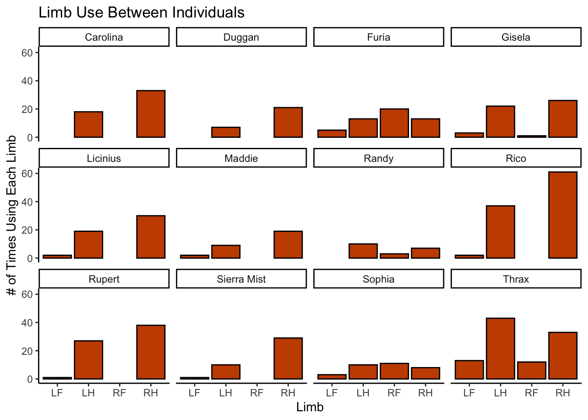
Not a lot of foot use. It might not be very useful to include these data
Just look at bipedal locomotion
l_feet <-L %>%filter(Category =="BP")ggplot (l_feet, aes(x= Limb)) +geom_bar(color ="black", fill ="#C84E00") +theme_classic() +xlab("Limb") +ylab("# of Times Using Each Limb") +ggtitle("Foot Use Between Individuals") +facet_wrap (~ Focal)
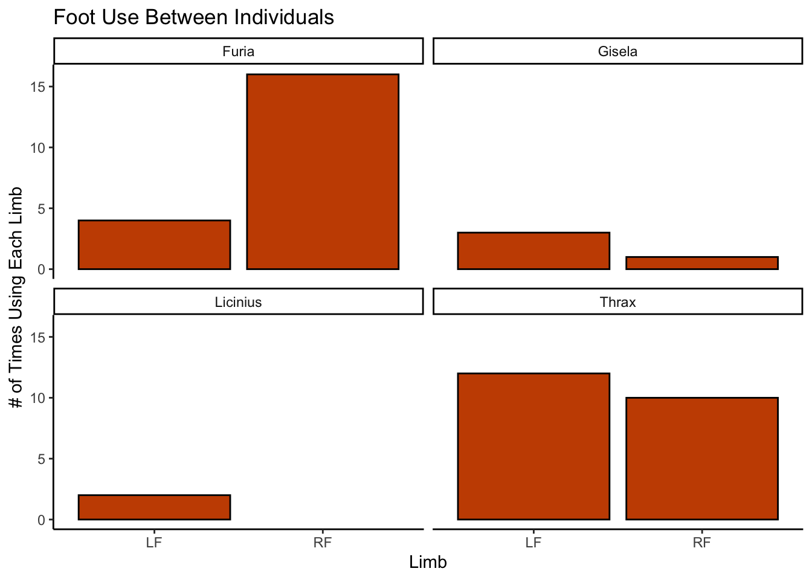
I don’t really see any overall patterns here. It looks like Furia leads with her right foor more than left and Thrax leads a little more with his left foot than right.
Does age impact hand use?
ggplot(L, aes(x = Category, y = Age, color = Side)) +geom_jitter() +theme_classic() +xlab("Type of Behavior") +ylab("Age of Lemur") +ggtitle("Does Age Affect Limb Use?") +scale_color_manual(values =c("#1D6363", "#E89923"))
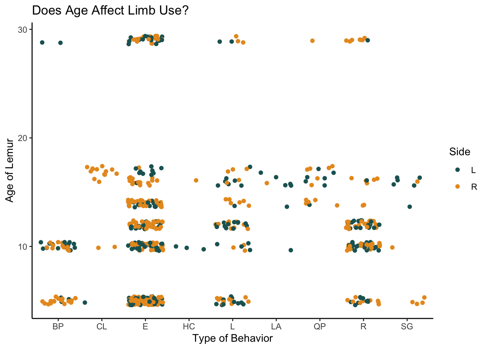
Yeah I don’t think it does lol
Trying to make the graph I yearn for
ggplot (l_noLA, aes(x= Category, fill = Side)) +geom_bar(color ="black") +theme_classic() +xlab("Type of Behavior") +ylab("# of Times Using Each Limb") +ggtitle("Limb Use Between Lemur Species") +facet_wrap (~ Species, scales ="free") +scale_fill_manual(values =c("#1D6363", "#E89923"))
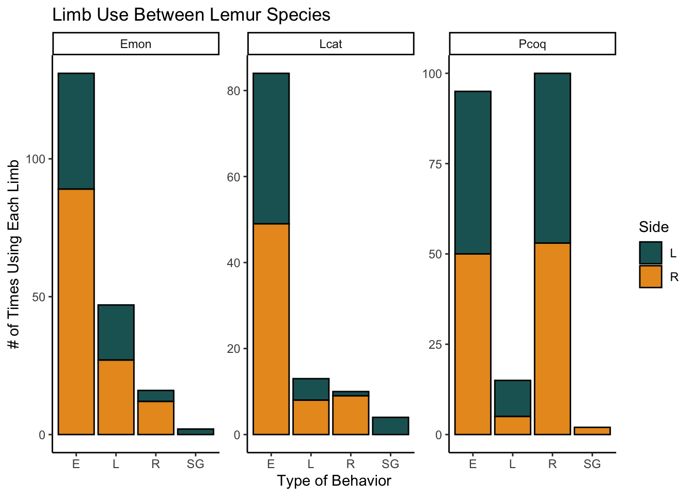
It’s still not exactly what I want. I want the Y-axis to be % of grasps being with left hand, not total times used. Splitting by color makes it really hard to read, but Idk how else to do it :P
ggplot (l_noLA, aes(x= Side, fill =interaction(Category, Side))) +geom_bar(color ="black") +theme_classic() +xlab("Left or Right Side") +ylab("# of Times Using Each Limb") +ggtitle("Limb Use Between Lemur Species") +facet_wrap (~ Species, scales ="free")
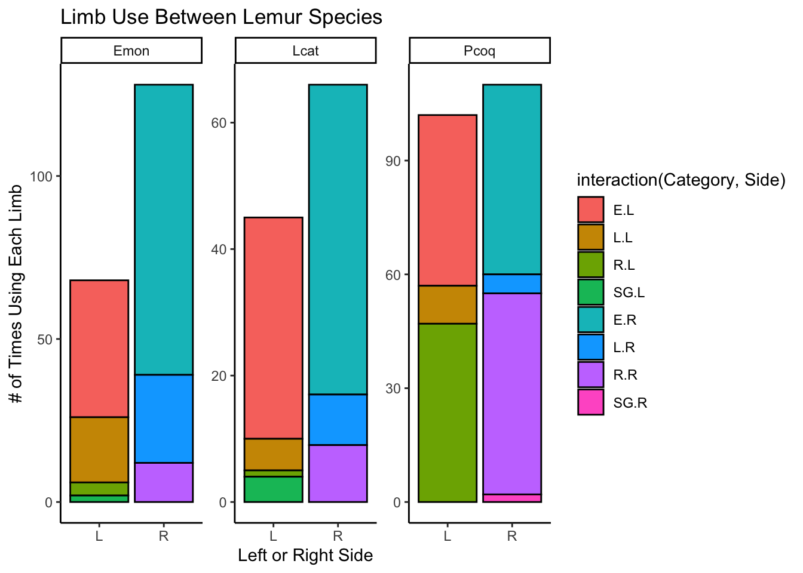
Wow that it was too complicated. Why did I dare make this monstrosity?
Okay, the landing and foot use data is fun and all, but the hand grasps it what I actually need to look at. I’m going to make that into a .CSV and analyze the data in JMP
ggplot (l_grasps, aes(x= Side)) +geom_bar(color ="black", fill ="#C84E00") +theme_classic() +xlab("Left or Right Side") +ylab("# of Times Using Each Limb") +ggtitle("Hand Use for Grasping Between Individuals") +facet_wrap (~ Focal, scales ="free")
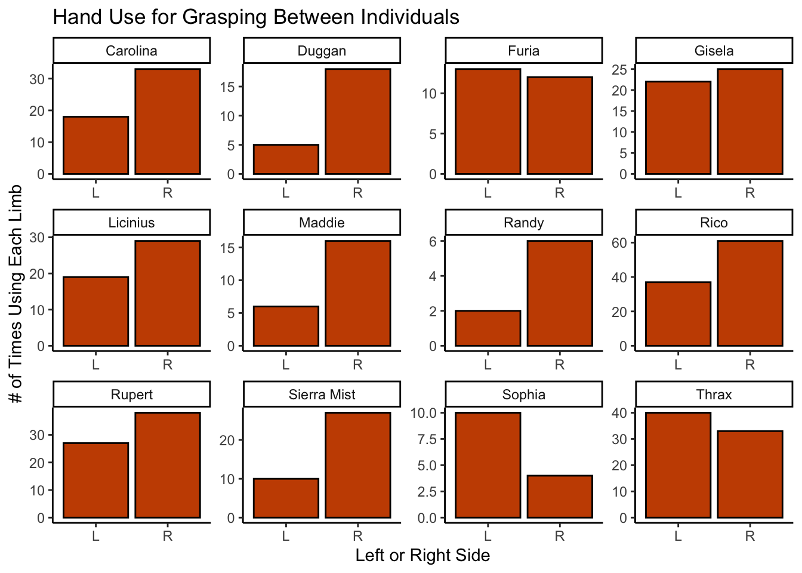
All of my analyses were done wrong!!
I literally wish I were dead rn
##Is hand preference independent of individual?## (need to do 9 tests for 3 species x 3 grasps)
Fisher's Exact Test for Count Data
data: g_sifaka
p-value = 1
alternative hypothesis: true odds ratio is not equal to 1
95 percent confidence interval:
0.5422522 1.8369859
sample estimates:
odds ratio
0.9975969
Fisher's Exact Test for Count Data
data: g_mongoz
p-value = 0.1927
alternative hypothesis: true odds ratio is not equal to 1
95 percent confidence interval:
0.7024164 5.1181251
sample estimates:
odds ratio
1.848276
Fisher's Exact Test for Count Data
data: g_lcat
p-value = 0.8761
alternative hypothesis: true odds ratio is not equal to 1
95 percent confidence interval:
0.562976 2.115936
sample estimates:
odds ratio
1.08496
Warning in read.table(file = file, header = header, sep = sep, quote =
quote, : incomplete final line found by readTableHeader on '~/Documents/GitHub/
Lefty_Lemurs/BySex.csv'
mean(by_sex$P.Value)
[1] 0.6896
ggplot(by_sex, aes(x= Species, y= P.Value)) +geom_bar(stat='identity', color ="black", fill ="#1D6363") +theme_classic()+xlab("Species of Lemur") +ylab("P-Value (less than 0.05 is significant)") +ggtitle("Is Hand Preference Independent of Sex?") +geom_text(aes(label= P.Value, x= Species, y= P.Value), vjust=-0.5) +theme(text =element_text(size =20)) +theme(axis.text.x =element_text(size =10))
Warning in read.table(file = file, header = header, sep = sep, quote =
quote, : incomplete final line found by readTableHeader on '~/Documents/GitHub/
Lefty_Lemurs/BySpecies.csv'
mean(by_species$P.Value)
[1] 0.1199867
ggplot(by_species, aes(x= Behavior, y= P.Value)) +geom_bar(stat='identity', color ="black", fill ="#993399") +theme_classic()+xlab("Behavior") +ylab("P-Value (less than 0.05 is significant)") +ggtitle("Is Hand Preference Independent of Species?") +geom_text(aes(label= P.Value, x= Behavior, y= P.Value), vjust=-0.5) +theme(text =element_text(size =20)) +theme(axis.text.x =element_text(size =10))